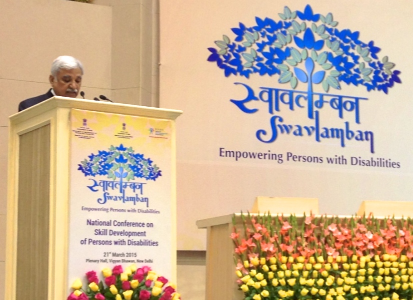

3/21/2015
On Saturday, March 21, 2015, India launched a new National Action Plan for Skill Training of Persons with Disabilities, at a day long conference held in Vigyan Bhavan, New Delhi, India. The National Action Plan is the result of a collaboration between the Ministry of Skill Development and Entrepreneurship (MSDE) and the Department of Empowerment of Persons with Disability within the Ministry for Social Justice and Empowerment (MSJE), for the training of 2.5 million persons with disabilities (PwDs) over the next seven years.
MSDE Secretary Sunil Arora introduced Dr. Alim Chandani, CEO of Global Reach Out Initiative, Inc. (GRO), in his opening remarks, referring to Dr. Chandani as a lighthouse of inspiration for other PWDs in India.
Dr. Alim Chandani, in his address to the audience, congratulated the MSDE and MSJE on the launch of the National Action Plan and thanked the Ministries for appointing him to the PwDs Sector Skill Council. Dr. Chandani emphasized the importance of including PwDs in the planning, implementation and evaluation of the National Action Plan. “We will need to develop awareness and sensitization programs to educate society on becoming empathetic to, and understanding, the needs of people with disabilities and how to work with them in a fair and humane manner,” Dr. Chandani said.
Dr. Chandani stressed the importance of cooperation between all stakeholders to ensure inclusion, equalization and accessibility for PwDs. Dr. Chandani concluded, “I want an India where others born like me in India with a disability will not have to leave their homeland to get the opportunities I received and can thrive right here at home.”
Watch Dr. Alim Chandani’s full video address here.
The GRO Leadership Skills Training Center and Entrepreneurial Hub for the Disabled in India will provide a state-of-the-art platform for quality vocational and advanced skills training programs for the disabled, designed by the disabled, with the goal of increasing employment opportunities for PwDs in India. Global Reach Out Initiative, Inc. (GRO) is a U.S.-based 501(c)(3) non-profit, tax-exempt organization.
Website: http://www.globalreachout.org

MSDE Secretary Sunil Arora